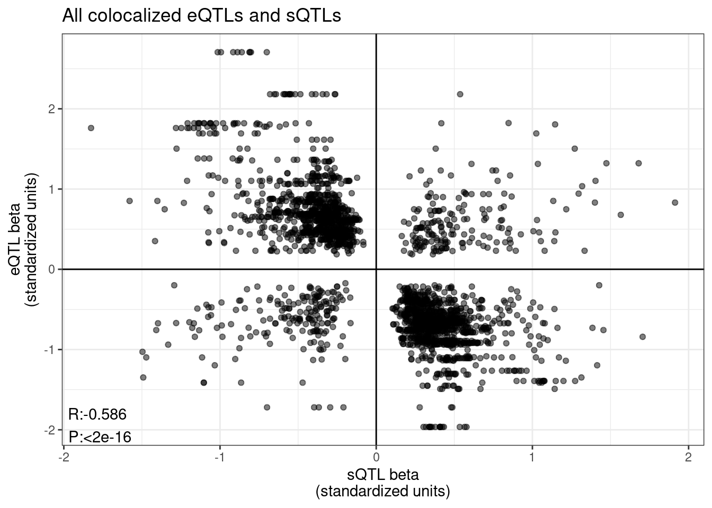
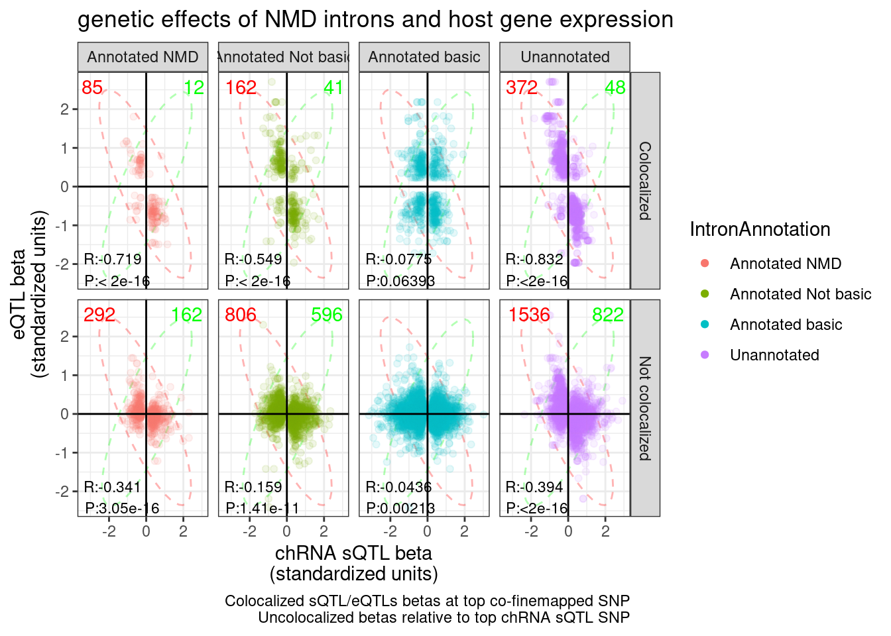
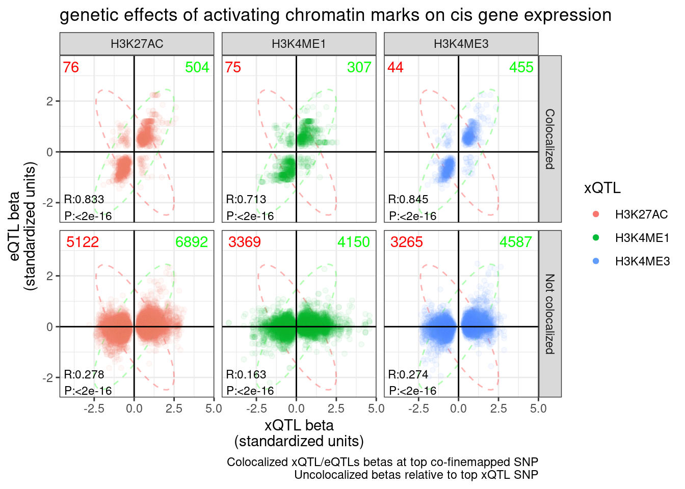
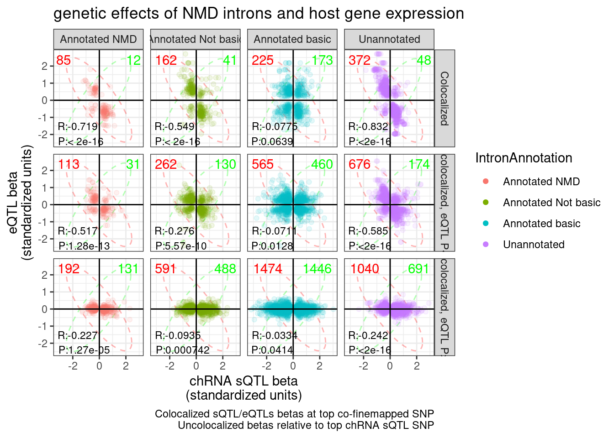
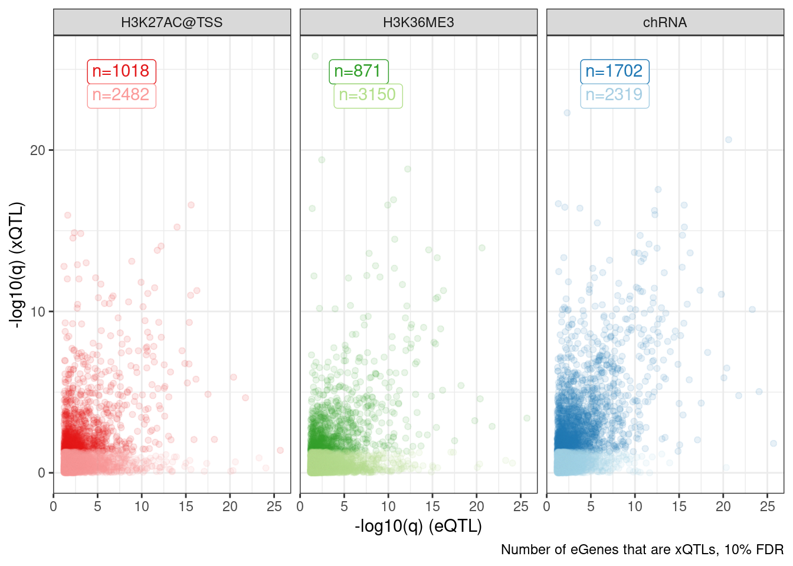
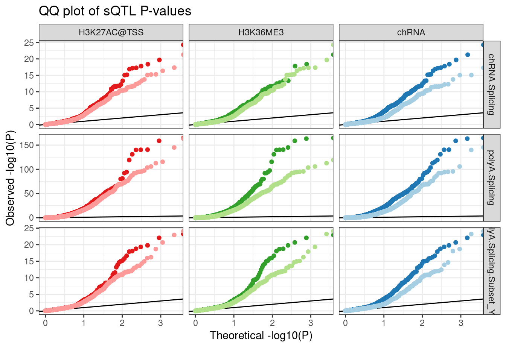
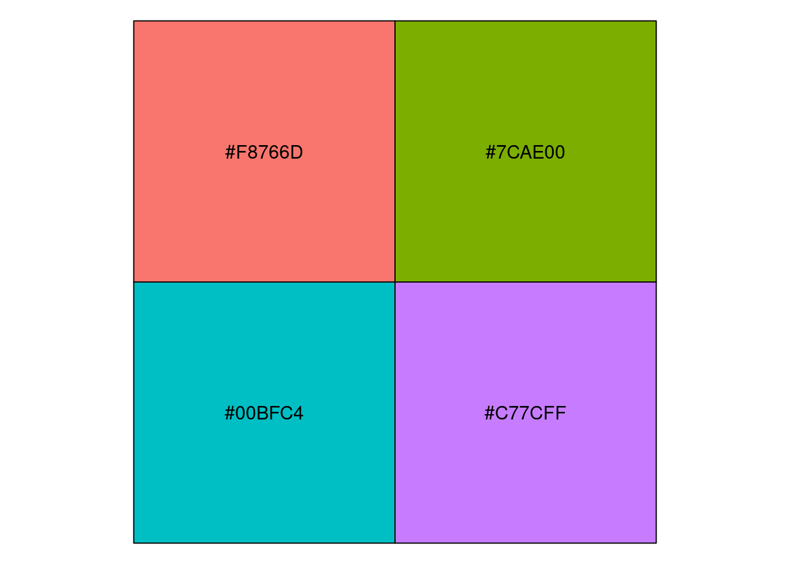
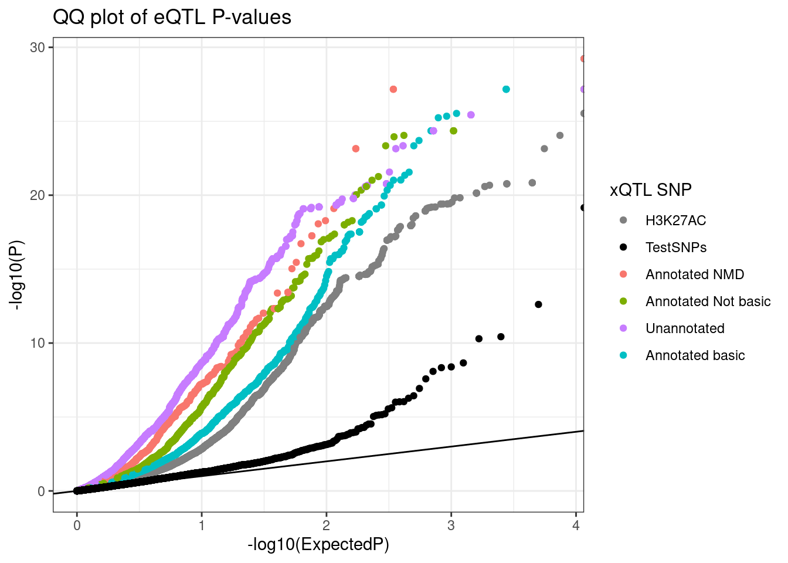

Last updated: 2022-11-04
Checks: 6 1
Knit directory: ChromatinSplicingQTLs/analysis/
This reproducible R Markdown analysis was created with workflowr (version 1.6.2). The Checks tab describes the reproducibility checks that were applied when the results were created. The Past versions tab lists the development history.
The R Markdown is untracked by Git. To know which version of the R Markdown file created these results, you’ll want to first commit it to the Git repo. If you’re still working on the analysis, you can ignore this warning. When you’re finished, you can run wflow_publish to commit the R Markdown file and build the HTML.
Great job! The global environment was empty. Objects defined in the global environment can affect the analysis in your R Markdown file in unknown ways. For reproduciblity it’s best to always run the code in an empty environment.
The command set.seed(20191126) was run prior to running the code in the R Markdown file. Setting a seed ensures that any results that rely on randomness, e.g. subsampling or permutations, are reproducible.
Great job! Recording the operating system, R version, and package versions is critical for reproducibility.
Nice! There were no cached chunks for this analysis, so you can be confident that you successfully produced the results during this run.
Great job! Using relative paths to the files within your workflowr project makes it easier to run your code on other machines.
Great! You are using Git for version control. Tracking code development and connecting the code version to the results is critical for reproducibility.
The results in this page were generated with repository version 293329b. See the Past versions tab to see a history of the changes made to the R Markdown and HTML files.
Note that you need to be careful to ensure that all relevant files for the analysis have been committed to Git prior to generating the results (you can use wflow_publish or wflow_git_commit). workflowr only checks the R Markdown file, but you know if there are other scripts or data files that it depends on. Below is the status of the Git repository when the results were generated:
Ignored files:
Ignored: .DS_Store
Ignored: .Rhistory
Ignored: .Rproj.user/
Ignored: analysis/.Rhistory
Ignored: analysis/figure/
Ignored: code/.DS_Store
Ignored: code/.RData
Ignored: code/.Snakefile.swp
Ignored: code/._.DS_Store
Ignored: code/._README.md
Ignored: code/._report.html
Ignored: code/.ipynb_checkpoints/
Ignored: code/.snakemake/
Ignored: code/APA_Processing/
Ignored: code/Alignments/
Ignored: code/ChromHMM/
Ignored: code/ENCODE/
Ignored: code/ExpressionAnalysis/
Ignored: code/FastqFastp/
Ignored: code/FastqFastpSE/
Ignored: code/Genotypes/
Ignored: code/H3K36me3_CutAndTag.pdf
Ignored: code/IntronSlopes/
Ignored: code/Metaplots/
Ignored: code/Misc/
Ignored: code/MiscCountTables/
Ignored: code/Multiqc/
Ignored: code/Multiqc_chRNA/
Ignored: code/NonCodingRNA/
Ignored: code/NonCodingRNA_annotation/
Ignored: code/PeakCalling/
Ignored: code/Phenotypes/
Ignored: code/PlotGruberQTLs/
Ignored: code/PlotQTLs/
Ignored: code/ProCapAnalysis/
Ignored: code/QC/
Ignored: code/QTL_SNP_Enrichment/
Ignored: code/QTLs/
Ignored: code/RPKM_tables/
Ignored: code/ReferenceGenome/
Ignored: code/Rplots.pdf
Ignored: code/Session.vim
Ignored: code/SplicingAnalysis/
Ignored: code/TODO
Ignored: code/Tehranchi/
Ignored: code/bigwigs/
Ignored: code/bigwigs_FromNonWASPFilteredReads/
Ignored: code/config/.DS_Store
Ignored: code/config/._.DS_Store
Ignored: code/config/.ipynb_checkpoints/
Ignored: code/dag.pdf
Ignored: code/dag.png
Ignored: code/dag.svg
Ignored: code/debug.ipynb
Ignored: code/debug_python.ipynb
Ignored: code/deepTools/
Ignored: code/featureCounts/
Ignored: code/gwas_summary_stats/
Ignored: code/hyprcoloc/
Ignored: code/igv_session.xml
Ignored: code/log
Ignored: code/logs/
Ignored: code/notebooks/.ipynb_checkpoints/
Ignored: code/pi1/
Ignored: code/rules/.ipynb_checkpoints/
Ignored: code/rules/OldRules/
Ignored: code/rules/notebooks/
Ignored: code/scratch/
Ignored: code/scripts/.ipynb_checkpoints/
Ignored: code/scripts/GTFtools_0.8.0/
Ignored: code/scripts/__pycache__/
Ignored: code/scripts/liftOverBedpe/liftOverBedpe.py
Ignored: code/snakemake.dryrun.log
Ignored: code/snakemake.log
Ignored: code/snakemake.sbatch.log
Ignored: code/test.introns.bed
Ignored: code/test.introns2.bed
Ignored: data/.DS_Store
Ignored: data/._.DS_Store
Ignored: data/._20220414203249_JASPAR2022_combined_matrices_25818_jaspar.txt
Ignored: data/GWAS_catalog_summary_stats_sources/._list_gwas_summary_statistics_6_Apr_2022-10.csv
Ignored: data/GWAS_catalog_summary_stats_sources/._list_gwas_summary_statistics_6_Apr_2022-11.csv
Ignored: data/GWAS_catalog_summary_stats_sources/._list_gwas_summary_statistics_6_Apr_2022-2.csv
Ignored: data/GWAS_catalog_summary_stats_sources/._list_gwas_summary_statistics_6_Apr_2022-3.csv
Ignored: data/GWAS_catalog_summary_stats_sources/._list_gwas_summary_statistics_6_Apr_2022-4.csv
Ignored: data/GWAS_catalog_summary_stats_sources/._list_gwas_summary_statistics_6_Apr_2022-5.csv
Ignored: data/GWAS_catalog_summary_stats_sources/._list_gwas_summary_statistics_6_Apr_2022-6.csv
Ignored: data/GWAS_catalog_summary_stats_sources/._list_gwas_summary_statistics_6_Apr_2022-7.csv
Ignored: data/GWAS_catalog_summary_stats_sources/._list_gwas_summary_statistics_6_Apr_2022-8.csv
Ignored: data/GWAS_catalog_summary_stats_sources/._list_gwas_summary_statistics_6_Apr_2022.csv
Untracked files:
Untracked: analysis/20221102_PlotStuffForYang.Rmd
Untracked: code/snakemake_profiles/slurm/__pycache__/
Unstaged changes:
Modified: analysis/20221012_IntronRetentionAndExpressionConcordance.Rmd
Modified: code/scripts/GenometracksByGenotype
Note that any generated files, e.g. HTML, png, CSS, etc., are not included in this status report because it is ok for generated content to have uncommitted changes.
There are no past versions. Publish this analysis with wflow_publish() to start tracking its development.
Yang asked for some specific plots to put in a grant or presentation or something. Here I will make those plots, possibly explore the data a little bit if something comes to mind. A lot of these plots were originally explored in this notebook but that notebook is getting unweildy and disorganized and overall a pain when I want to go back and re-run parts of it so I am re-plotting the highlights that Yang asked for here.
Load libraries and read in a bunch of files…
library(tidyverse)
library(data.table)
library(MASS)
library(RColorBrewer)
library(scales)
NMD.transcript.introns <- fread("../code/SplicingAnalysis/Annotations/NMD/NMD_trancsript_introns.bed.gz", col.names=c("chrom", "start", "stop", "name", "score", "strand")) %>%
mutate(stop=stop+1) %>%
unite(intron, chrom:stop, strand)
Non.NMD.transcript.introns <- fread("../code/SplicingAnalysis/Annotations/NMD/NonNMD_trancsript_introns.bed.gz", col.names=c("chrom", "start", "stop", "name", "score", "strand")) %>%
mutate(stop=stop+1) %>%
unite(intron, chrom:stop, strand)
NMD.specific.introns <- setdiff(NMD.transcript.introns$intron, Non.NMD.transcript.introns$intron)
Intron.Annotations.basic <- fread("../code/SplicingAnalysis/regtools_annotate_combined/basic.bed.gz") %>%
filter(known_junction ==1) %>%
unite(intron, chrom, start, end, strand)
Introns.Annotations.comprehensive <- fread("../code/SplicingAnalysis/regtools_annotate_combined/comprehensive.bed.gz") %>%
filter(known_junction ==1) %>%
unite(intron, chrom, start, end, strand)
Introns.Annotations.all <- fread("../code/SplicingAnalysis/regtools_annotate_combined/comprehensive.bed.gz") %>%
unite(intron, chrom, start, end, strand)
PhenotypeAliases <- read_tsv("../data/Phenotypes_recode_for_Plotting.txt")
PC.ShortAliases <- PhenotypeAliases %>%
dplyr::select(PC, ShorterAlias) %>% deframe()
PeaksToTSS <- Sys.glob("../code/Misc/PeaksClosestToTSS/*_assigned.tsv.gz") %>%
setNames(str_replace(., "../code/Misc/PeaksClosestToTSS/(.+?)_assigned.tsv.gz", "\\1")) %>%
lapply(read_tsv) %>%
bind_rows(.id="ChromatinMark") %>%
mutate(GenePeakPair = paste(gene, peak, sep = ";")) %>%
distinct(ChromatinMark, peak, gene, .keep_all=T)
TopSNPEffects.ByPairs <- fread("../code/pi1/PairwisePi1Traits.P.all.txt.gz")
coloc.tidy <- fread("../output/hyprcoloc_results/ForColoc/MolColocStandard/hyprcoloc.results.OnlyColocalized.Stats.txt.gz") %>%
separate(phenotype_full, into=c("PC", "P"), sep=";")
coloc.tidy.pairwise <- left_join(
coloc.tidy,
coloc.tidy %>%
dplyr::select(-iteration, -ColocPr, -RegionalPr, -TopSNPFinemapPr),
by=c("Locus"),
suffix=c("1", "2")
) %>%
filter(!(P1==P2 & PC1 == PC2)) %>%
filter(snp1 == snp2) %>%
dplyr::select(ColocalizedTopSNP = snp1, GeneLocus=Locus, everything(), -snp2) %>%
unite(TraitPair, P1, PC1, P2, PC2, remove=F)Now let’s start to plot some stuff:
coloc.tidy.pairwise %>%
filter(
(PC1 %in% c("Expression.Splicing.Subset_YRI")) &
(PC2 %in% c("polyA.Splicing"))
) %>%
ggplot(aes(y=beta1, x=beta2)) +
geom_point(alpha=0.5, color='black') +
geom_vline(xintercept=0) +
geom_hline(yintercept=0) +
geom_text(
data = . %>%
summarise(cor=cor.test(beta1,beta2)[["estimate"]], pval=cor.test(beta1,beta2)[["p.value"]]) %>%
mutate(R = signif(cor, 3), P=format.pval(pval, 3)) %>%
mutate(label = str_glue("R:{R}\nP:{P}")),
aes(x=-Inf, y=-Inf, label=label),
hjust=-0.1, vjust=-0.1, color='black'
) +
theme_bw() +
labs(title="All colocalized eQTLs and sQTLs", x="sQTL beta\n(standardized units)", y="eQTL beta\n(standardized units)")
P1Category <- "polyA.Splicing"
sQTL.eQTL.dat.ColocalizedAndUncolocalized <- TopSNPEffects.ByPairs %>%
filter(
(PC1 %in% c(P1Category)) &
(PC2 %in% c("Expression.Splicing.Subset_YRI")) &
(FDR.x < 0.1)) %>%
mutate(intron = str_replace(P1, "^(.+):(.+?):(.+?):clu.+?_([+-])$", "chr\\1_\\2_\\3_\\4")) %>%
mutate(IntronAnnotation = case_when(
intron %in% NMD.specific.introns ~ "Annotated NMD",
intron %in% Intron.Annotations.basic$intron ~ "Annotated basic",
intron %in% Introns.Annotations.comprehensive$intron ~ "Annotated Not basic",
TRUE ~ "Unannotated"
)) %>%
dplyr::select(beta1=beta.x, beta2=trait.x.beta.in.y, P1, PC1, P2, PC2, IntronAnnotation) %>%
unite(TraitPair, P1, PC1, P2, PC2, remove=F) %>%
filter(!TraitPair %in% coloc.tidy.pairwise$TraitPair) %>%
mutate(Colocalized = "Not colocalized") %>%
bind_rows(
coloc.tidy.pairwise %>%
filter(
(PC2 %in% c("Expression.Splicing.Subset_YRI")) &
(PC1 %in% c(P1Category))
) %>%
mutate(intron = str_replace(P1, "^(.+):(.+?):(.+?):clu.+?_([+-])$", "chr\\1_\\2_\\3_\\4")) %>%
mutate(IntronAnnotation = case_when(
intron %in% NMD.specific.introns ~ "Annotated NMD",
intron %in% Intron.Annotations.basic$intron ~ "Annotated basic",
intron %in% Introns.Annotations.comprehensive$intron ~ "Annotated Not basic",
TRUE ~ "Unannotated"
)) %>%
dplyr::select(beta1, beta2, P1, PC1, P2, PC2, IntronAnnotation) %>%
mutate(Colocalized = "Colocalized")
) %>%
mutate(Is.Concordant = sign(beta1)==sign(beta2)) %>%
mutate(ConsistentWithNMD = case_when(
!IntronAnnotation == "Annotated basic" & Is.Concordant ~ "Inconsistent with NMD",
!IntronAnnotation == "Annotated basic" & !Is.Concordant ~ "Consistent with NMD",
IntronAnnotation == "Annotated basic" ~ NA_character_
))
P.sQTL.eQTLs <- ggplot(sQTL.eQTL.dat.ColocalizedAndUncolocalized, aes(x=beta1, y=beta2, color=IntronAnnotation)) +
stat_ellipse(
data = mvrnorm(1000, mu=c(0,0), matrix(c(1,0.8,0.8,1),2,2)) %>%
as.data.frame() %>%
dplyr::select(beta1=V1, beta2=V2),
type = "norm", linetype = 2, color="green", alpha=0.3) +
stat_ellipse(
data = mvrnorm(1000, mu=c(0,0), matrix(c(1,-0.8,-0.8,1),2,2)) %>%
as.data.frame() %>%
dplyr::select(beta1=V1, beta2=V2),
type = "norm", linetype = 2, color="red", alpha=0.3) +
geom_point(alpha=0.1) +
geom_vline(xintercept=0) +
geom_hline(yintercept=0) +
# geom_smooth(method='lm') +
geom_text(
data = . %>%
group_by(IntronAnnotation, Colocalized) %>%
summarise(cor=cor.test(beta1,beta2)[["estimate"]], pval=cor.test(beta1,beta2)[["p.value"]]) %>%
mutate(R = signif(cor, 3), P=format.pval(pval, 3)) %>%
mutate(label = str_glue("R:{R}\nP:{P}")),
aes(x=-Inf, y=-Inf, label=label),
hjust=-.1, vjust=-0.1, color='black', size=3
) +
geom_text(
data = . %>%
group_by(IntronAnnotation, ConsistentWithNMD, Colocalized) %>%
distinct(P2, .keep_all=T) %>%
ungroup() %>%
count(IntronAnnotation, ConsistentWithNMD, Colocalized) %>%
filter(ConsistentWithNMD=="Consistent with NMD"),
aes(x=-Inf, y=Inf, label=n),
hjust=-0.2, vjust=1.5, color='red'
) +
geom_text(
data = . %>%
group_by(IntronAnnotation, ConsistentWithNMD, Colocalized) %>%
distinct(P2, .keep_all=T) %>%
ungroup() %>%
count(IntronAnnotation, ConsistentWithNMD, Colocalized) %>%
filter(ConsistentWithNMD=="Inconsistent with NMD"),
aes(x=Inf, y=Inf, label=n),
hjust=1.2, vjust=1.5, color='green'
) +
facet_grid(Colocalized ~ IntronAnnotation) +
theme_bw() +
labs(title="genetic effects of NMD introns and host gene expression", x="chRNA sQTL beta\n(standardized units)", y="eQTL beta\n(standardized units)", caption="Colocalized sQTL/eQTLs betas at top co-finemapped SNP\nUncolocalized betas relative to top chRNA sQTL SNP") +
guides(colour = guide_legend(override.aes = list(alpha = 1)))
P.sQTL.eQTLs
If you sum up all the red and the green counts in the colocalized sub-plots, and then only take distinct genes, you get the following:
CountsOfNMD.Consitent.eGene.sQTL.Effects <- sQTL.eQTL.dat.ColocalizedAndUncolocalized %>%
filter(Colocalized == "Colocalized") %>%
distinct(P2, .keep_all=T) %>%
count(ConsistentWithNMD) %>%
drop_na()
CountsOfNMD.Consitent.eGene.sQTL.Effects ConsistentWithNMD n
1: Consistent with NMD 373
2: Inconsistent with NMD 49(CountsOfNMD.Consitent.eGene.sQTL.Effects$n[1] - CountsOfNMD.Consitent.eGene.sQTL.Effects$n[2])/3970[1] 0.08161209For reference, let’s make the same plots and do the same calculation for H3K27AC, H3K4ME3, and H3K4ME1:
P1Category <- c("H3K4ME3", "H3K4ME1", "H3K27AC")
hQTL.eQTL.dat.ColocalizedAndUncolocalized <- TopSNPEffects.ByPairs %>%
filter(
(PC1 %in% c(P1Category)) &
(PC2 %in% c("Expression.Splicing.Subset_YRI")) &
(FDR.x < 0.1)) %>%
dplyr::select(beta1=beta.x, beta2=trait.x.beta.in.y, P1, PC1, P2, PC2) %>%
unite(TraitPair, P1, PC1, P2, PC2, remove=F) %>%
filter(!TraitPair %in% coloc.tidy.pairwise$TraitPair) %>%
mutate(Colocalized = "Not colocalized") %>%
bind_rows(
coloc.tidy.pairwise %>%
filter(
(PC2 %in% c("Expression.Splicing.Subset_YRI")) &
(PC1 %in% c(P1Category))
) %>%
dplyr::select(beta1, beta2, P1, PC1, P2, PC1) %>%
mutate(Colocalized = "Colocalized")
) %>%
mutate(Is.Concordant = sign(beta1)==sign(beta2)) %>%
mutate(ConsistentWithNMD = if_else(Is.Concordant, "Consistent with enhancer/promoter activation", "Inconsistent with enhancer/promoter activation"))
P.hQTL.eQTLs <- ggplot(hQTL.eQTL.dat.ColocalizedAndUncolocalized, aes(x=beta1, y=beta2, color=PC1)) +
stat_ellipse(
data = mvrnorm(1000, mu=c(0,0), matrix(c(1,0.8,0.8,1),2,2)) %>%
as.data.frame() %>%
dplyr::select(beta1=V1, beta2=V2),
type = "norm", linetype = 2, color="green", alpha=0.3) +
stat_ellipse(
data = mvrnorm(1000, mu=c(0,0), matrix(c(1,-0.8,-0.8,1),2,2)) %>%
as.data.frame() %>%
dplyr::select(beta1=V1, beta2=V2),
type = "norm", linetype = 2, color="red", alpha=0.3) +
geom_point(alpha=0.05) +
geom_vline(xintercept=0) +
geom_hline(yintercept=0) +
# geom_smooth(method='lm') +
geom_text(
data = . %>%
group_by(PC1, Colocalized) %>%
summarise(cor=cor.test(beta1,beta2)[["estimate"]], pval=cor.test(beta1,beta2)[["p.value"]]) %>%
mutate(R = signif(cor, 3), P=format.pval(pval, 3)) %>%
mutate(label = str_glue("R:{R}\nP:{P}")),
aes(x=-Inf, y=-Inf, label=label),
hjust=-.1, vjust=-0.1, color='black', size=3
) +
geom_text(
data = . %>%
group_by(PC1, ConsistentWithNMD, Colocalized) %>%
distinct(P2, .keep_all=T) %>%
ungroup() %>%
count(PC1, ConsistentWithNMD, Colocalized) %>%
filter(ConsistentWithNMD=="Consistent with enhancer/promoter activation"),
aes(x=Inf, y=Inf, label=n),
hjust=1.2, vjust=1.5, color='green'
) +
geom_text(
data = . %>%
group_by(PC1, ConsistentWithNMD, Colocalized) %>%
distinct(P2, .keep_all=T) %>%
ungroup() %>%
count(PC1, ConsistentWithNMD, Colocalized) %>%
filter(ConsistentWithNMD=="Inconsistent with enhancer/promoter activation"),
aes(x=-Inf, y=Inf, label=n),
hjust=-0.2, vjust=1.5, color='red'
) +
facet_grid(Colocalized ~ PC1) +
theme_bw() +
labs(title="genetic effects of activating chromatin marks on cis gene expression", x="xQTL beta\n(standardized units)", y="eQTL beta\n(standardized units)", caption="Colocalized xQTL/eQTLs betas at top co-finemapped SNP\nUncolocalized betas relative to top xQTL SNP", color="xQTL") +
guides(colour = guide_legend(override.aes = list(alpha = 1)))
P.hQTL.eQTLs
CountsOfNMD.Consitent.eGene.hQTL.Effects <- hQTL.eQTL.dat.ColocalizedAndUncolocalized %>%
filter(Colocalized == "Colocalized") %>%
distinct(P2, .keep_all=T) %>%
count(ConsistentWithNMD) %>%
dplyr::select(ConsistentWithPromoterEnhancerActivation=ConsistentWithNMD,n) %>%
drop_na()
CountsOfNMD.Consitent.eGene.hQTL.Effects ConsistentWithPromoterEnhancerActivation n
1: Consistent with enhancer/promoter activation 658
2: Inconsistent with enhancer/promoter activation 102(CountsOfNMD.Consitent.eGene.hQTL.Effects$n[1] - CountsOfNMD.Consitent.eGene.hQTL.Effects$n[2])/3970[1] 0.1400504ggsave("../code/scratch/eQTL.sQTLs.Betas.pdf", P.sQTL.eQTLs, width=8)
ggsave("../code/scratch/eQTL.hQTLs.Betas.pdf", P.hQTL.eQTLs, width=8)I wonder if this plot might be more informative (in terms of counting the non-colocalized effects, and also not seeing a trend) if i broke up the non-colocalized facets into those with nominal eQTL P < 0.01 and those > 0.01
eQTL.P.Threshold <- 0.1
P1Category <- "polyA.Splicing"
sQTL.eQTL.dat.ColocalizedAndUncolocalized <- TopSNPEffects.ByPairs %>%
filter(
(PC1 %in% c(P1Category)) &
(PC2 %in% c("Expression.Splicing.Subset_YRI")) &
(FDR.x < 0.1)) %>%
mutate(intron = str_replace(P1, "^(.+):(.+?):(.+?):clu.+?_([+-])$", "chr\\1_\\2_\\3_\\4")) %>%
mutate(IntronAnnotation = case_when(
intron %in% NMD.specific.introns ~ "Annotated NMD",
intron %in% Intron.Annotations.basic$intron ~ "Annotated basic",
intron %in% Introns.Annotations.comprehensive$intron ~ "Annotated Not basic",
TRUE ~ "Unannotated"
)) %>%
dplyr::select(beta1=beta.x, beta2=trait.x.beta.in.y, P1, PC1, P2, PC2, IntronAnnotation, eQTL.P = trait.x.p.in.y) %>%
unite(TraitPair, P1, PC1, P2, PC2, remove=F) %>%
filter(!TraitPair %in% coloc.tidy.pairwise$TraitPair) %>%
mutate(Colocalized = if_else(
eQTL.P < 0.05,
paste0("Not colocalized, eQTL P<", eQTL.P.Threshold),
paste0("Not colocalized, eQTL P>", eQTL.P.Threshold)
)) %>%
bind_rows(
coloc.tidy.pairwise %>%
filter(
(PC2 %in% c("Expression.Splicing.Subset_YRI")) &
(PC1 %in% c(P1Category))
) %>%
mutate(intron = str_replace(P1, "^(.+):(.+?):(.+?):clu.+?_([+-])$", "chr\\1_\\2_\\3_\\4")) %>%
mutate(IntronAnnotation = case_when(
intron %in% NMD.specific.introns ~ "Annotated NMD",
intron %in% Intron.Annotations.basic$intron ~ "Annotated basic",
intron %in% Introns.Annotations.comprehensive$intron ~ "Annotated Not basic",
TRUE ~ "Unannotated"
)) %>%
dplyr::select(beta1, beta2, P1, PC1, P2, PC2, IntronAnnotation) %>%
mutate(Colocalized = "Colocalized")
) %>%
mutate(Is.Concordant = sign(beta1)==sign(beta2)) %>%
mutate(ConsistentWithNMD = case_when(
!IntronAnnotation == "Annotated basic" & Is.Concordant ~ "Inconsistent with NMD",
!IntronAnnotation == "Annotated basic" & !Is.Concordant ~ "Consistent with NMD",
# IntronAnnotation == "Annotated basic" ~ NA_character_,
IntronAnnotation == "Annotated basic" & Is.Concordant ~ "Inconsistent with NMD",
IntronAnnotation == "Annotated basic" & !Is.Concordant ~ "Consistent with NMD"
)) %>%
filter(!is.na(Colocalized))
ggplot(sQTL.eQTL.dat.ColocalizedAndUncolocalized, aes(x=beta1, y=beta2, color=IntronAnnotation)) +
stat_ellipse(
data = mvrnorm(1000, mu=c(0,0), matrix(c(1,0.8,0.8,1),2,2)) %>%
as.data.frame() %>%
dplyr::select(beta1=V1, beta2=V2),
type = "norm", linetype = 2, color="green", alpha=0.3) +
stat_ellipse(
data = mvrnorm(1000, mu=c(0,0), matrix(c(1,-0.8,-0.8,1),2,2)) %>%
as.data.frame() %>%
dplyr::select(beta1=V1, beta2=V2),
type = "norm", linetype = 2, color="red", alpha=0.3) +
geom_point(alpha=0.1) +
geom_vline(xintercept=0) +
geom_hline(yintercept=0) +
geom_text(
data = . %>%
group_by(IntronAnnotation, Colocalized) %>%
summarise(cor=cor.test(beta1,beta2)[["estimate"]], pval=cor.test(beta1,beta2)[["p.value"]]) %>%
mutate(R = signif(cor, 3), P=format.pval(pval, 3)) %>%
mutate(label = str_glue("R:{R}\nP:{P}")),
aes(x=-Inf, y=-Inf, label=label),
hjust=-.1, vjust=-0.1, color='black', size=3
) +
geom_text(
data = . %>%
group_by(IntronAnnotation, ConsistentWithNMD, Colocalized) %>%
distinct(P2, .keep_all=T) %>%
ungroup() %>%
count(IntronAnnotation, ConsistentWithNMD, Colocalized) %>%
filter(ConsistentWithNMD=="Consistent with NMD"),
aes(x=-Inf, y=Inf, label=n),
hjust=-0.2, vjust=1.5, color='red'
) +
geom_text(
data = . %>%
group_by(IntronAnnotation, ConsistentWithNMD, Colocalized) %>%
distinct(P2, .keep_all=T) %>%
ungroup() %>%
count(IntronAnnotation, ConsistentWithNMD, Colocalized) %>%
filter(ConsistentWithNMD=="Inconsistent with NMD"),
aes(x=Inf, y=Inf, label=n),
hjust=1.2, vjust=1.5, color='green'
) +
facet_grid(Colocalized ~ IntronAnnotation) +
theme_bw() +
labs(title="genetic effects of NMD introns and host gene expression", x="chRNA sQTL beta\n(standardized units)", y="eQTL beta\n(standardized units)", caption="Colocalized sQTL/eQTLs betas at top co-finemapped SNP\nUncolocalized betas relative to top chRNA sQTL SNP") +
guides(colour = guide_legend(override.aes = list(alpha = 1)))
Let’s revisit making QQ plots to reproduce Carlos’ observation that polyA-specific eQTLs are more likely to be sQTLs…
brewer.pal(n=6, name="Paired")[1] "#A6CEE3" "#1F78B4" "#B2DF8A" "#33A02C" "#FB9A99" "#E31A1C"ColorKey <- c("chRNA.Expression.Splicing TRUE"="#1F78B4",
"chRNA.Expression.Splicing FALSE"="#A6CEE3",
"H3K36ME3 TRUE"="#33A02C",
"H3K36ME3 FALSE"="#B2DF8A",
"H3K27AC TRUE"="#E31A1C",
"H3K27AC FALSE"="#FB9A99")
LabelKey <- c("chRNA.Expression.Splicing"="chRNA",
"H3K36ME3"="H3K36ME3",
"H3K27AC"="H3K27AC@TSS")
sGenes <- paste0("../code/QTLs/QTLTools/", c("polyA.Splicing.Subset_YRI", "polyA.Splicing","chRNA.Splicing"),"/GroupedPermutationPassForColoc.FDR_Added.txt.gz") %>%
setNames(str_replace(., "../code/QTLs/QTLTools/(.+?)/GroupedPermutationPassForColoc.FDR_Added.txt.gz", "\\1")) %>%
lapply(fread) %>%
bind_rows(.id="Dataset")
Dat.to.plot <- TopSNPEffects.ByPairs %>%
filter(
PC1 == "Expression.Splicing.Subset_YRI" &
PC2 %in% c("H3K27AC", "chRNA.Expression.Splicing", "H3K36ME3")
) %>%
filter(
PC2 %in% c("chRNA.Expression.Splicing", "H3K36ME3") |
paste(P1, P2, sep=";") %in% PeaksToTSS$GenePeakPair
) %>%
group_by(GeneLocus, PC2) %>%
arrange(FDR.y) %>%
distinct(PC2, .keep_all=T) %>%
ungroup() %>%
# mutate(Is_xQTL = FDR.y<0.05) %>%
mutate(Is_xQTL = p_permutation.y<0.05) %>%
mutate(FacetLabel = recode(PC2, !!!LabelKey)) %>%
mutate(Group = paste(PC2, Is_xQTL)) %>%
add_count(Group, FacetLabel)Dat.to.plot %>%
ggplot(aes(x=-log10(p_permutation.x), y=-log10(p_permutation.y), color=Group)) +
geom_label(
data = . %>%
distinct(Group, FacetLabel, n) %>%
group_by(FacetLabel) %>%
mutate(rn = row_number()),
aes(label=paste0("n=", n), vjust=rn+1, color=Group),
x=-Inf, y=Inf, hjust=-0.5) +
geom_point(alpha=0.1) +
scale_color_manual(values=ColorKey) +
facet_wrap(~FacetLabel) +
theme_bw() +
theme(legend.position = "none") +
labs(caption="Number of eGenes that are xQTLs, 10% FDR", x="-log10(q) (eQTL)", y="-log10(q) (xQTL)")
Dat.to.plot %>%
inner_join(
sGenes %>%
dplyr::select(GeneLocus=grp_id, sGene.P = adj_beta_pval, Dataset)
) %>%
group_by(Dataset, Group, FacetLabel) %>%
mutate(ExpectedP = percent_rank(sGene.P)) %>%
ungroup() %>%
ggplot(aes(x=-log10(ExpectedP), y=-log10(sGene.P), color=Group)) +
geom_abline() +
geom_point() +
scale_color_manual(values=c(ColorKey)) +
facet_grid(Dataset ~ FacetLabel, scales="free_y") +
theme_bw() +
theme(legend.position = "none") +
labs(title="QQ plot of sQTL P-values", color="xQTL SNP", y="Observed -log10(P)", x="Theoretical -log10(P)", caption=str_wrap("", 30))
Hmmm, again I cannot reproduce the results… Maybe I have to group by intron type to see a difference… Most sQTLs are in annotated basic introns, which do not effect expression. So all those sQTLs could swamp and difference that distinguished polyA-specific eQTLs.
Let’s try to reproduce the results more to exactly how Carlos did it…
test.SNPs <- paste0("../code/QTLs/QTLTools/", c("chRNA.Expression.Splicing", "Expression.Splicing.Subset_YRI"), "/NominalPassForColoc.RandomSamplePvals.txt.gz") %>%
setNames(str_replace(., "../code/QTLs/QTLTools/(.+?)/NominalPassForColoc.RandomSamplePvals.txt.gz", "\\1")) %>%
lapply(read_tsv, col_names=c("trait.x.p.in.y")) %>%
bind_rows(.id="PC2") %>%
mutate(PC1 = "TestSNPs") %>%
group_by(PC2) %>%
sample_n(5000) %>%
ungroup()
show_col(hue_pal()(4))
hue_pal()(4)[1] "#F8766D" "#7CAE00" "#00BFC4" "#C77CFF"Colors <- c("H3K27AC"="#808080", "TestSNPs"="#000000", "Annotated NMD"="#F8766D", "Annotated Not basic"="#7CAE00", "Unannotated"="#C77CFF", "Annotated basic"="#00BFC4")
TopSNPEffects.ByPairs %>%
filter(
(PC2 %in% c("chRNA.Expression.Splicing", "Expression.Splicing.Subset_YRI")) &
# (PC1 %in% c("polyA.Splicing.Subset_YRI", "H3K27AC")) &
(PC1 %in% c("polyA.Splicing", "H3K27AC")) &
(FDR.x < 0.1)) %>%
bind_rows(test.SNPs) %>%
mutate(intron = case_when(
PC1 %in% c("polyA.Splicing.Subset_YRI", "chRNA.Splicing", "polyA.Splicing") ~ str_replace(P1, "^(.+):(.+?):(.+?):clu.+?_([+-])$", "chr\\1_\\2_\\3_\\4"),
TRUE ~ NA_character_)) %>%
mutate(IntronAnnotation = case_when(
intron %in% NMD.specific.introns ~ "Annotated NMD",
intron %in% Intron.Annotations.basic$intron ~ "Annotated basic",
intron %in% Introns.Annotations.comprehensive$intron ~ "Annotated Not basic",
!is.na(intron) ~ "Unannotated",
TRUE ~ ""
)) %>%
# filter(!IntronAnnotation=="Annotated basic") %>%
filter(PC2 == "Expression.Splicing.Subset_YRI") %>%
mutate(SnpSet = case_when(
str_detect(PC1, "Splicing") ~ IntronAnnotation,
TRUE ~ PC1
)) %>%
group_by(SnpSet, PC2) %>%
mutate(ExpectedP = percent_rank(trait.x.p.in.y)) %>%
ungroup() %>%
# mutate(SnpSetColor = recode(SnpSet, !!!Colors)) %>%
ggplot(aes(x=-log10(ExpectedP), y=-log10(trait.x.p.in.y), color=SnpSet)) +
geom_abline() +
geom_point() +
# scale_color_identity() +
scale_color_manual(values=Colors) +
theme_bw() +
labs(title="QQ plot of eQTL P-values", color="xQTL SNP", y="-log10(P)")
ggsave("../code/scratch/QQ.eQTLs.By.xQTL.pdf", height=4, width=5)Let’s make the “polarized” version of this QQ plot… If the eQTL and xQTL betas have the same sign, plot them upright, if opposite site, mirror the QQ plot.
sessionInfo()R version 3.6.1 (2019-07-05)
Platform: x86_64-pc-linux-gnu (64-bit)
Running under: CentOS Linux 7 (Core)
Matrix products: default
BLAS/LAPACK: /software/openblas-0.2.19-el7-x86_64/lib/libopenblas_haswellp-r0.2.19.so
locale:
[1] LC_CTYPE=en_US.UTF-8 LC_NUMERIC=C LC_TIME=C
[4] LC_COLLATE=C LC_MONETARY=C LC_MESSAGES=C
[7] LC_PAPER=C LC_NAME=C LC_ADDRESS=C
[10] LC_TELEPHONE=C LC_MEASUREMENT=C LC_IDENTIFICATION=C
attached base packages:
[1] stats graphics grDevices utils datasets methods base
other attached packages:
[1] scales_1.1.0 RColorBrewer_1.1-2 MASS_7.3-51.4 data.table_1.14.2
[5] forcats_0.4.0 stringr_1.4.0 dplyr_1.0.9 purrr_0.3.4
[9] readr_1.3.1 tidyr_1.2.0 tibble_3.1.7 ggplot2_3.3.6
[13] tidyverse_1.3.0
loaded via a namespace (and not attached):
[1] Rcpp_1.0.5 lubridate_1.7.4 assertthat_0.2.1 rprojroot_2.0.2
[5] digest_0.6.20 utf8_1.1.4 R6_2.4.0 cellranger_1.1.0
[9] backports_1.4.1 reprex_0.3.0 evaluate_0.15 highr_0.9
[13] httr_1.4.4 pillar_1.7.0 rlang_1.0.5 readxl_1.3.1
[17] rstudioapi_0.14 R.oo_1.22.0 R.utils_2.9.0 rmarkdown_1.13
[21] labeling_0.3 munsell_0.5.0 broom_1.0.0 compiler_3.6.1
[25] httpuv_1.5.1 modelr_0.1.8 xfun_0.31 pkgconfig_2.0.2
[29] htmltools_0.5.3 tidyselect_1.1.2 workflowr_1.6.2 fansi_0.4.0
[33] crayon_1.3.4 dbplyr_1.4.2 withr_2.5.0 later_0.8.0
[37] R.methodsS3_1.7.1 grid_3.6.1 jsonlite_1.6 gtable_0.3.0
[41] lifecycle_1.0.1 DBI_1.1.0 git2r_0.26.1 magrittr_1.5
[45] cli_3.3.0 stringi_1.4.3 farver_2.1.0 fs_1.5.2
[49] promises_1.0.1 xml2_1.3.2 ellipsis_0.3.2 generics_0.1.3
[53] vctrs_0.4.1 tools_3.6.1 glue_1.6.2 hms_0.5.3
[57] fastmap_1.1.0 yaml_2.2.0 colorspace_1.4-1 rvest_0.3.5
[61] knitr_1.39 haven_2.3.1